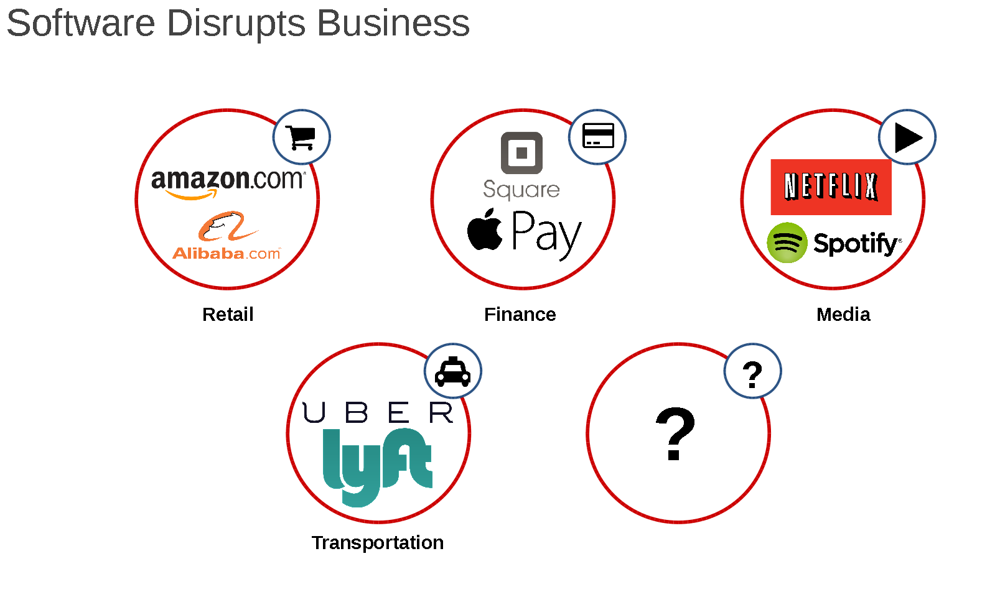
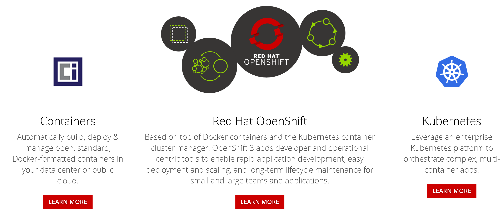
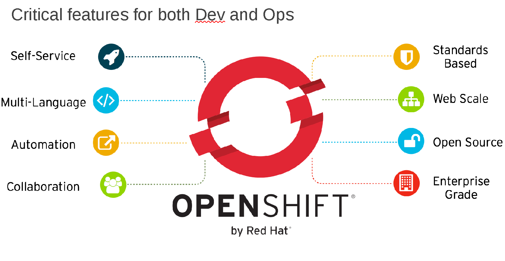
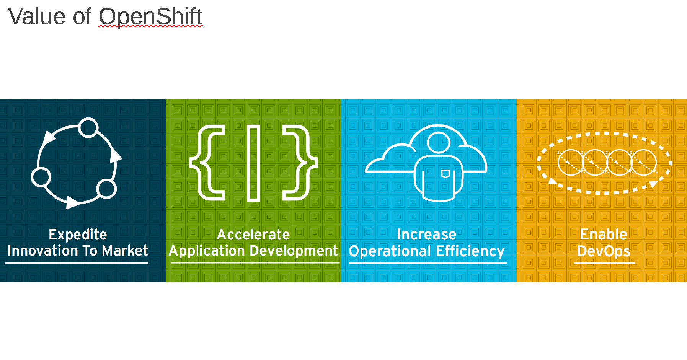
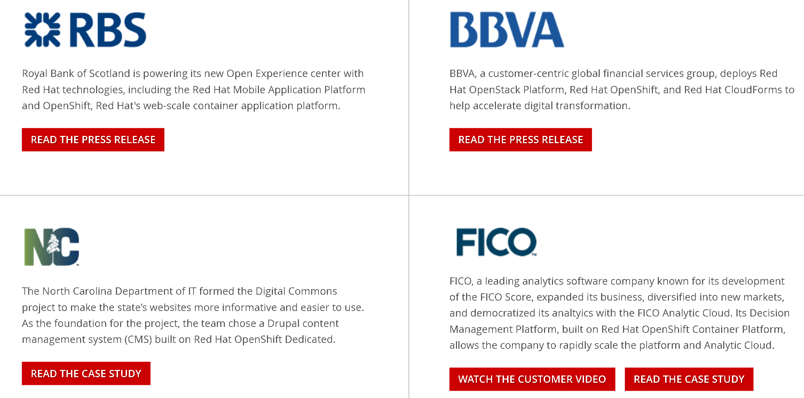
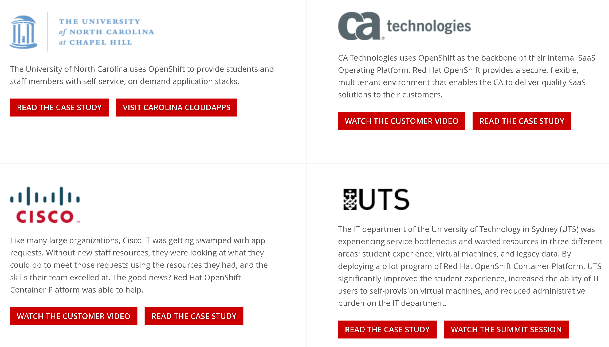
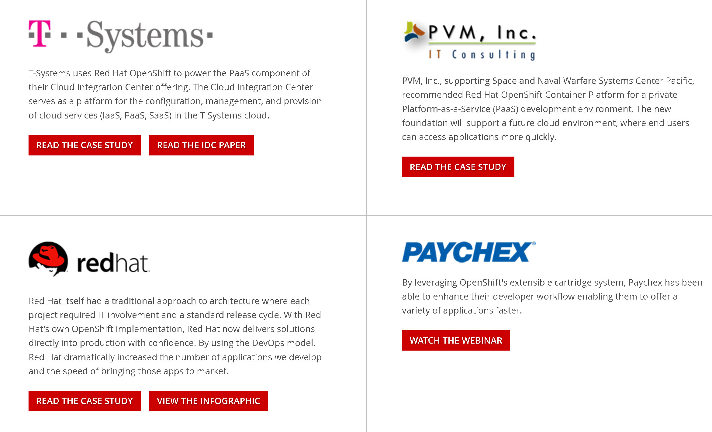

Platform as Service
PAAS
Created by Ashish Nabira
Powered by OpenShift
Agenda
- Market Dynamics
- Edgeverve's Proof of Concept(POC)
- Our Solution
- Architecture of Solution
- Use Cases
- Customers
- Q & A
- Demo by Rahul
Sofware is eating the world !!
Fast paced software development...
Social,Mobile,Analytics and Cloud
Edgeverve's POC
- Self Provisioning for developers
- Faster software development
- Automation
- Continuous Integration
- Containerize applications
- DevOps
Devops
Change in mindset + New Tools = Preparation for new fast paced worldAutomation
Automated Code testing
Automated deployment
Automated Infrastructure
Automated Everything
Teams working for Edgeverve's goals
- Linux/Unix
- Windows
- Database
- Storage
- Security
- Networking
- Developers
- Management
Each discipline comes with its own certified professionals.
Devops will help break boundaries and silos
Openshift is the industry’s most secure and comprehensive enterprise-grade container platform based on industry standards, Docker and Kubernetes.
Features
Self service On-demand application stack
Set-up a complex and stable environment in less than 5 minutes and then move on to the actual app development.”
Features
Code and push
Simply perform a "git push" to deploy your code to your application.
Features
Streamline the Delivery Process
OpenShift enables more than just deployment - it also gives you the tools you need to manage your entire development lifecycle
Simplified user experience and powerful workflow automation
- New application delivery pipelines based on Jenkins.
- New dashboard that aggregates application pipeline information into one comprehensive view.
- New bandwidth utilization visualization alongside CPU and memory consumption for a more comprehensive view of application resource usage
- New debugging utility that provides tools and options for application troubleshooting
Features
Heavy duty tools
Developers can create and manage applications utilizing a rich set of command-line tools, a powerful multi-device web console, or an Eclipse-based Integrated Development Environment such as JBoss Developer Studio.
Support and Services
Everything you need to become an expert with OpenShift
- Product Help
- 24 x7 support
- Training
- Professional Service
OpenShift and native .Net
- OpenShift will be providing a .NET runtime distributed and supported by Red Hat and Microsoft
- Will start with version 5 of the core framework
- Version parity goal of 60 days.
Openshift features
Value


Customers
Customers
Customers

Using Kubernetes instead of Docker Swarm would allow Edgeverve to leverage features like:
- Automatic binpacking
- Horizontal scaling
- Automated rollouts and rollbacks
- Storage orchestration
- Self-healing
- Service discovery and load balancing
- Secret and configuration management
- Batch execution
Working with Microsoft Team Foundation Server(TFS)
- TFS is working with Jenkins for building the application
- Openshift also uses Jenkins for building the application
- Jenkins can used to bridge Openshift with TFS
- TFS 2013 provides GIT also
Useful Links
https://developers.openshift.com
https://commons.openshift.org
https://openshift.com
https://hub.openshift.com/